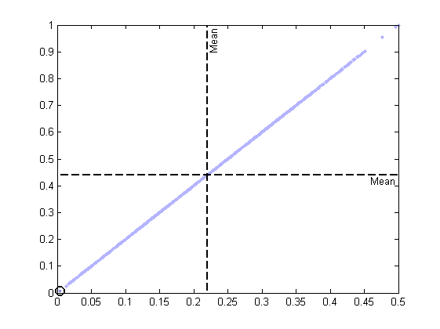
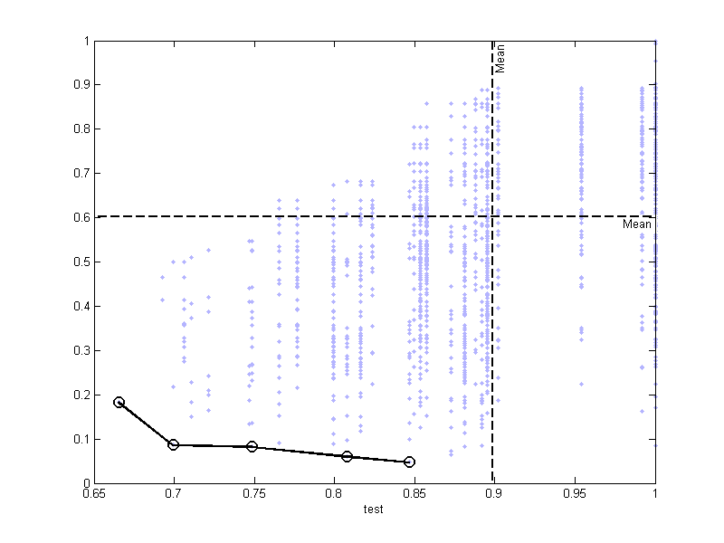
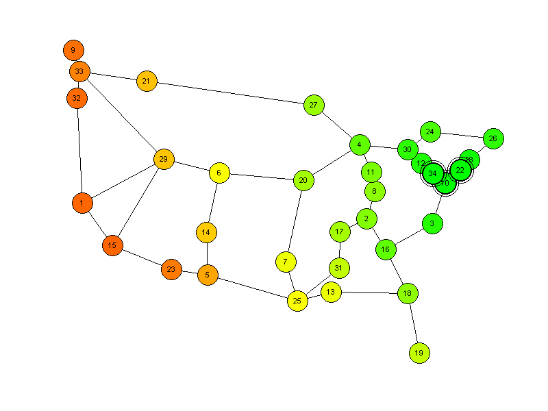
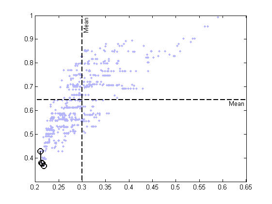
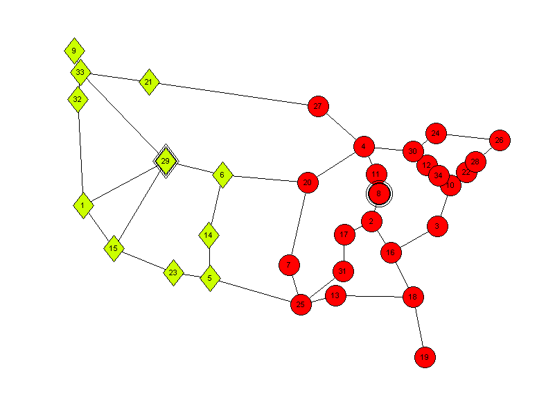

Contents
% Examplescript to show how to plot optimization results and corresponding % placements and failures % Load example dataset load internet2.mat;
Usage for evaluateSingleInstance - Failure free
% This code shows how to plot optimization results and corresponding % placements and failures for a single distance matrix instance. % How to evaluate different controller placements for a single distance % matrix 'topology', e.g. for two controllers: evaluationResult=evaluateSingleInstance(allToAllShortestPathMatrix(topology),2); % How to plot the solution space for two of the evaluated placements, e.g. % average controller to controller latency and maximum controller to % controller latency: paretoIdx=plotPareto(evaluationResult.avgLatencyC2C,evaluationResult.maxLatencyC2C); % How to retrieve the parameters necessary to plot a given topology, % placement, and failure scenario, e.g. for average controller to % controller latency: [controllerplaces,controllersfailed,nodesfailed]=getPlotParameters(topology,evaluationResult,'avgLatencyC2C',paretoIdx(1)); % How to plot the topology and to visualize placements and failure % scenarios, e.g. showing the controller to controller latency: plotTopology(topology,latlong,controllerplaces,'showids','off','showControllerToControllerLatency','on'); % The results are the following plots:

Usage for evaluateControllerFailure - Controller error
% This code shows how to plot optimization results and corresponding % placements and failures for controller failure scenarios % How to evaluate different controller placements including controller % failure scenarios, e.g. for three controllers: evaluationResult=evaluateControllerFailure(topology,3); % How to plot the solution space for two of the evaluated placements, e.g. % maximum node to controller latency and maximum controller to % controller latency with exporting the result as a pdf-document and % labeling the x-axis as 'test': paretoIdx=plotPareto(evaluationResult.maxLatencyN2CAllControllerFailures,evaluationResult.maxLatencyC2CAllControllerFailures,'Export','pdf','XLabel','test'); % How to retrieve the parameters necessary to plot a given topology, % placement, and failure scenario, e.g. for maximum node to controller % latency: [controllerplaces,controllersfailed,nodesfailed]=getPlotParameters(topology,evaluationResult,'maxLatencyN2C',paretoIdx(1)); % How to plot the topology and to visualize placements and failure % scenarios, e.g. showing the node to controller latency with exporting the % result as pdf-document, setting the markers to 'oooooooooooooo' and % scaling the plot to 800x600: plotTopology(topology,latlong,controllerplaces,'showids','on','showNodeToControllerLatency','on','Export','pdf','Markers','oooooooooooooo','Position',[0 0 800 600]); % The results are the following plots:
Considering all combinations of 1 controller failure(s)... Considering all combinations of 2 controller failure(s)... 
Usage for evaluateNodeFailure - Node error
% This code shows how to plot optimization results and corresponding % placements and failures for node failure scenarios % How to evaluate different controller placements including node failure % scenarios, e.g. for three controllers: evaluationResult=evaluateNodeFailure(topology,3); % How to plot the solution space for two of the evaluated placements, e.g. % average node to controller latency and maximum node to controller % latency: paretoIdx=plotPareto(evaluationResult.avgLatencyN2C,evaluationResult.maxLatencyN2C); % How to retrieve the parameters necessary to plot a given topology, % placement, and failure scenario, e.g. for the controller imbalance: [controllerplaces,controllersfailed,nodesfailed]=getPlotParameters(topology,evaluationResult,'controllerImbalance',paretoIdx(1)); % How to plot the topology and to visualize placements and failure % scenarios, e.g. showing the controller imbalance with exporting the % result as jpg-document, setting the filename to 'testFile' and % setting the number of failed controllers to one: plotTopology(topology,latlong,controllerplaces,'showids','on','showControllerImbalance','on','Export','jpg','Filename','testFile','FailedControllers',1); % The results are the following plots:
Considering all combinations of 1 node failure(s)........ Considering all combinations of 2 node failure(s)......... 